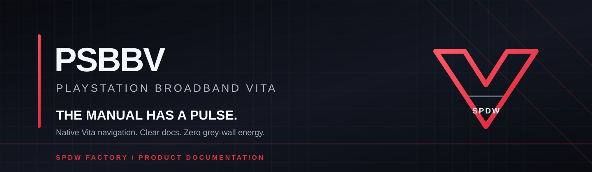

Node 01 / Discovery & library
Games
Game discovery, library metadata, collection views, compatibility information and launch hand-off. Core defines how game entries appear and how availability is reported.
INTEGRATION REVISION: TRACKED BY COREThe node registry defines the product boundaries of PSBBV. Each node owns a focused capability; Core owns the integrated shell, compatibility contract and official release.

These are the six functional domains registered by Core. The registry describes their intended responsibilities; it does not imply that every feature is implemented or included in the current foundation build.
Game discovery, library metadata, collection views, compatibility information and launch hand-off. Core defines how game entries appear and how availability is reported.
INTEGRATION REVISION: TRACKED BY COREHomebrew and application discovery, package information, installation hand-off and update visibility. Installation must respect Vita package and platform constraints.
INTEGRATION REVISION: TRACKED BY CORENetwork status, connection-aware services and remote endpoints. Offline behaviour is a first-class state; the interface must never block the frame while waiting for a network response.
INTEGRATION REVISION: TRACKED BY COREMedia browsing and presentation surfaces, with clear separation between metadata, local files and playback capabilities actually supported by the current build.
INTEGRATION REVISION: TRACKED BY COREDownload queue and transfer state, integrity checks and safe hand-off to package or content workflows. Interrupted transfers must be visible and recoverable.
INTEGRATION REVISION: TRACKED BY COREDevice information, preferences and system-level actions exposed through explicit permissions and guarded operations. Destructive actions require deliberate confirmation.
INTEGRATION REVISION: TRACKED BY COREA component is not automatically part of a release just because its repository builds. Core records the exact revision that passed integration.
Each official Core release must list its Core version, node repository and commit revisions, included features, generated artifacts, checksums, known limitations and validation evidence. A node omitted from the manifest is not part of that release.
Repository links and pinned revisions will be added here as each node's canonical repository and integration contract are registered. No placeholder URLs and no invented version numbers.